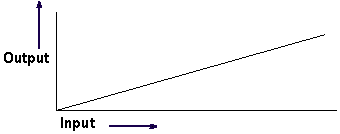

目标搜寻操作在您想要让指定的单元格值收敛到指定目标值时使用。通过更改变量参数，然后对比目标值与目标单元格的值来完成。
目标单元格的值与目标值不相等时，将更改变量参数，然后再次比较二者。直到目标单元格的值等于目标值(在指定公差许可范围内)。
有五种分析方法可以使用：
试位法
Newton - Raphson
Newton - Raphson 2D
非线性 Sidel 2D
优化 1xN
|
注释 |
要在电子表格中选择其中一种方法，选择加载项→选项→设置目标搜寻。 |
另一个与目标搜寻相结合的操作成为目标分析，这个功能将创建目标搜寻操作的输出图表。可以使用这个图表来查找目标搜寻时合适的初始值，或者帮助您更好地理解表达式如何响应输入中的变化。
这在有含有多个解决方案的函数中特别有用。

|
应用模块 |
建模 |
|
菜单 |
工具→表达式 |
|
电子表格中的位置 |
加载项→目标搜寻/目标分析 |